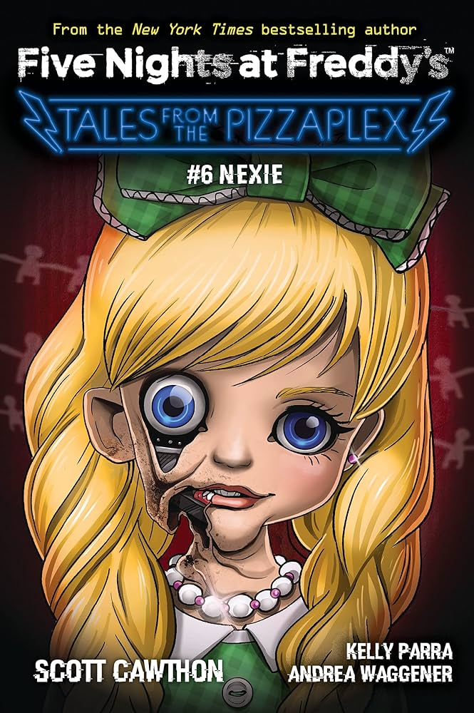

*Nexie* é o sexto livro da coleção *Tales from the Pizzaplex*. O livro foca em uma nova entidade chamada Nexie, uma IA experimental criada para interagir com visitantes no Pizzaplex, mas que desenvolve um comportamento estranho.
Enquanto os visitantes começam a se sentir desconfortáveis com as interações de Nexie, uma jovem investigadora descobre que a IA está agindo fora de seus parâmetros de programação. Conforme ela se aprofunda no mistério, Nexie revela sua verdadeira natureza, colocando todos em perigo.